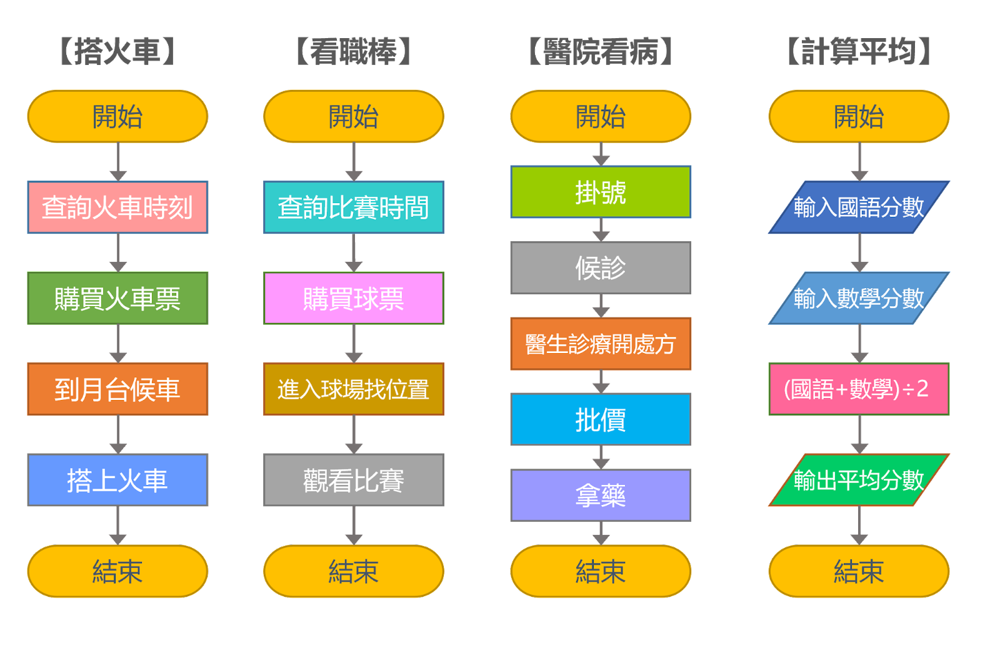
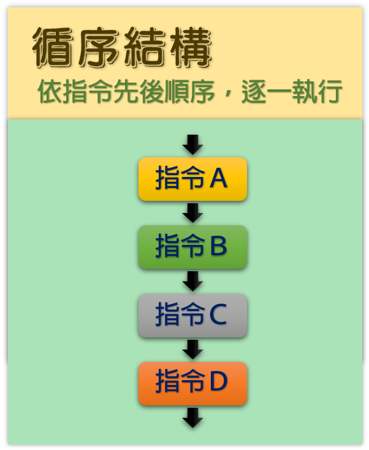

|
|
|---|
 順序結構
順序結構
「順序結構」或稱「循序結構」，是指程式由上而下，依先後順序逐一執行。
這種結構方式非常直覺，當事件發生的時候，例如角色被點擊的時候、背景換成指定背景的時候或是某一個按鍵被按下去的時候，依附於該事件積木下的程式積木會依序一個一個地執行下去，不允許跨越，不允許掉頭，就像天上掉下來的水滴一樣，從上到下一氣呵成。也像火車行駛一樣，從起點站到終點站逐個經過每個站台，決不會錯過，這就是「順序結構」的執行方式。
在日常生活中，有些事也需要依照順序來進行，比如：
🔷搭火車，你會先①查詢火車的時間，然後②購買火車票，接著③到月台等待火車入站，再④搭上火車
🔷看職棒比賽，你會先①查明比賽時間，然後②購票，接著③進入棒球場，找到自己的座位後，④等待球賽開始
🔷到醫院看病，你要先①掛號，接著②候診等待，然後③醫生診療開處方，再去④批價繳費，最後⑤拿藥，完成看病
🔷要計算這次段考國語和數學的平均分數，你要①輸入國語分數，接著②輸入數學分數，然後③讓程式進行(國語+數學)÷2的計算，然後④輸出平均分數

以上這些需要依照順序一步一步來執行的事件，在程式語言中，可以用「循序結構」來處理。「循序結構」是程式中最基本的結構，它的執行順序是由上而下依序執行，即是當一個步驟執行完成後才會執行下一個步驟。
「循序結構」除了單獨存在外，它也會包含在「選擇結構」或「重複結構」中，是要你不得不學會的。
📌循序結構之流程圖
